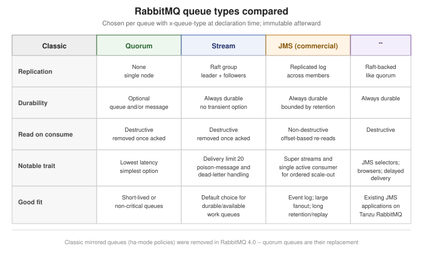

RabbitMQ Queue Types
|
This content was generated with the assistance of AI and should be verified against the official documentation before being relied on in production. |
RabbitMQ Architecture and the AMQP Model
covers how a published message gets routed, through an exchange and its bindings, into a queue — but says
nothing about what happens inside that queue once the message arrives. RabbitMQ, unlike Kafka’s single
partitioned-log model, exposes several fundamentally different queue types, chosen per queue, each with its
own durability, replication, ordering and throughput trade-offs. A queue’s type is fixed at declaration time
(x-queue-type) and cannot be changed afterward — picking the right one up front matters more here than it
does for most other per-queue settings.
Classic queues
A classic queue is RabbitMQ’s original, simplest queue type: it lives on a single node, and, starting with
RabbitMQ 4.0, is documented as a plainly non-replicated queue type — a node failure that holds a classic queue
takes that queue’s messages down with it (or, at best, makes them unavailable until the node returns). A classic
queue can still be declared durable (its definition survives a broker restart) independently of whether the
messages published to it use persistent delivery mode, and it remains the lowest-overhead, lowest-latency option
of the four, well suited to short-lived, non-critical, or genuinely single-node workloads where replication would
be pure overhead. It offers no built-in high-availability story of its own any more — that used to be classic
mirrored queues, covered below as a removed feature.
Quorum queues
A quorum queue replicates its contents across multiple cluster nodes using the Raft consensus algorithm — each quorum queue is its own independent Raft group, elects one member as leader (the only member any client actually reads from or writes to) and the rest as followers (replicating the leader’s log and standing ready to be elected if the leader fails), and is always durable: there is no transient variant, every message and every queue-metadata change is replicated and persisted before being acknowledged. It is RabbitMQ’s current default recommendation for a replicated, durable queue. A typical group has 3 members — the practical minimum RabbitMQ recommends for high availability — and a larger cluster generally keeps that member count odd, which is what lets a Raft group tolerate the loss of a minority of its members without losing quorum.
Every quorum queue also enforces a delivery limit, defaulting to 20 since RabbitMQ 4.0: a message that
has been delivered, rejected or nacked and requeued this many times without ever being successfully acknowledged
is treated as a poison message — one that appears to make every consumer that touches it fail — and is
either dropped or, if the queue has a dead-letter exchange configured, dead-lettered instead of being redelivered
forever. Ordinary dead-lettering is at-most-once: if the broker crashes between removing a message from the
source queue and enqueueing it on the target, the message is simply lost. Setting a source queue’s
dead-letter-strategy to at-least-once (together with overflow=reject-publish and the stream_queue
feature flag enabled) closes that gap: the source queue keeps its copy of a dead-lettered message until the
target queue confirms it was actually enqueued there, at the cost of the source queue temporarily holding both
copies.
Quorum queues are not the right default everywhere, though. RabbitMQ’s own guidance is to avoid them for: high-churn temporary or exclusive queues (the Raft group setup/teardown cost is real and not worth paying repeatedly); workloads that prioritize the lowest possible latency over durability; queues expected to carry very large backlogs (RabbitMQ calls out roughly five million messages and beyond); and large fanout scenarios with many bindings per exchange. Classic queues or streams generally fit those cases better.
package com.example.messaging.rabbitmq;
import java.util.Map;
import com.rabbitmq.client.Channel;
import com.rabbitmq.client.Connection;
import com.rabbitmq.client.ConnectionFactory;
public class QuorumOrdersQueue {
public static void main(String[] args) throws Exception {
ConnectionFactory factory = new ConnectionFactory();
factory.setHost("localhost");
try (Connection connection = factory.newConnection();
Channel channel = connection.createChannel()) {
Map<String, Object> arguments = Map.of(
"x-queue-type", "quorum",
"x-delivery-limit", 20, // redelivery attempts before drop/dead-letter
"x-dead-letter-exchange", "orders.dlx");
channel.queueDeclare("orders", true, false, false, arguments);
}
}
}See RabbitMQ Documentation — Quorum Queues for the full configuration reference, including the exact at-least-once dead-lettering setup and Raft-specific tuning.
Streams
A stream is an append-only, replicated log — conceptually far closer to a Kafka topic partition (see
Apache Kafka Architecture) than to a classic AMQP queue, and the
one RabbitMQ queue type built around non-destructive reads: consuming from a stream never removes a message
from it, so many independent consumers can each read the same stream at their own pace and their own offset,
the same way independent Kafka consumer groups re-read a partition. A consumer picks where to start (first
offset, last offset, next new message, a timestamp, or a specific offset), and retention is bounded by size or
age (max-length-bytes / max-age) rather than by consumption — once a bound is crossed, the oldest data is
trimmed, the same whole-segment mechanics Kafka’s own log retention uses.
A single stream scales further with a super stream: a logical stream partitioned into several individual
streams (created with rabbitmq-streams add_super_stream), RabbitMQ’s analogue of a Kafka topic’s partitions.
Combined with single active consumer — within a named consumer group, only one instance actively consumes a
given (super)stream partition at a time, with another group member automatically promoted if the active one
fails — a super stream gets both horizontal scale and strictly ordered, non-competing processing per partition.
Filtering what a consumer receives happens in two complementary layers: a broker-side Bloom filter
(x-stream-filter-size-bytes, 16 to 255 bytes, 16 by default) lets a consumer skip whole unmatching chunks
cheaply, at the cost of occasional false positives, and AMQP filter expressions (property or SQL filter
expressions, evaluated over AMQP 1.0) give exact, broker-evaluated matching on top of it — the two are
typically used together rather than as alternatives.
Because of that non-destructive-read design, a stream never supports several things every other queue type here does: it cannot be non-durable, cannot be exclusive, has no per-message TTL, no queue length limit, no message or consumer priority, no dead-lettering, and no global QoS prefetch — all of those assume messages are individually removable, which a stream’s log-like storage does not allow.
See RabbitMQ Documentation — Streams and Superstreams (Partitioned Streams) for super stream setup and single active consumer configuration, and RabbitMQ Documentation — Stream Plugin for the dedicated binary protocol and client libraries streams use alongside plain AMQP 0-9-1 access.
JMS queues (commercial)
JMS queues are a fourth queue type, available only in the commercial VMware Tanzu RabbitMQ distribution, not in open-source RabbitMQ. Like quorum queues, a JMS queue is Raft-backed and replicates both messages and their delivery state across nodes for the same data-safety guarantees, but it additionally implements full JMS semantics — message selectors, queue browsers, and delivery delay — built on AMQP 1.0 and the Apache Qpid JMS client, while still being cross-protocol: one side of a JMS queue can be a JMS application and the other an ordinary AMQP 1.0, AMQP 0-9-1, MQTT or STOMP client. This reference otherwise covers only RabbitMQ’s free, open-source distribution, so JMS queues are noted here for completeness rather than covered further.
Classic mirrored queues: removed in 4.0
Classic queue mirroring — replicating a classic queue’s contents to other nodes via an ha-mode policy — was deprecated for some time and then fully removed starting with RabbitMQ 4.0; from that release onward,
classic queues are non-replicated only, and quorum queues (or streams, for the log use case) are the only
replicated options that remain. A cluster still relying on mirrored classic queues on an older release migrates
using one of three paths RabbitMQ’s own migration guidance lays out:
-
Blue-green cluster upgrade — stand up a new cluster already on quorum queues and cut traffic over at the infrastructure level.
-
Virtual host migration — create a new vhost on the existing cluster with quorum as its default queue type, and use the Federation plugin (or shovels) to move traffic from the old vhost to the new one with minimal client changes, typically just updated connection parameters.
-
In-place migration, where a maintenance window is acceptable — stop producers and consumers, shovel each mirrored queue’s messages into a temporary queue, delete and re-declare the original queue as a quorum queue, then shovel the messages back.
Whichever path is used, features the old mirrored classic queues relied on — priority queues, queue-length overflow behavior, global QoS prefetch — need checking against quorum queues' own, different support for each before migrating, since not every one of them carries over unchanged.
Declaring a queue’s type
A queue’s type is set once, at declaration time, with the x-queue-type argument, and is then immutable for
that queue’s lifetime — it cannot be changed later by a policy or by redeclaring the same queue with a different
type.
Map<String, Object> arguments = Map.of("x-queue-type", "quorum");
channel.queueDeclare("orders", true, false, false, arguments);What a policy (or a vhost/node-wide setting) can control is which type a queue gets when a client declares
one without specifying x-queue-type at all: a vhost’s default queue type (rabbitmqctl add_vhost qa1
--default-queue-type quorum) or a node-wide fallback (default_queue_type = quorum in rabbitmq.conf) supplies
the type in that case, with the vhost-level setting taking precedence when both are configured. Neither setting
retroactively changes any queue already declared — only new, type-unqualified declarations are affected.
